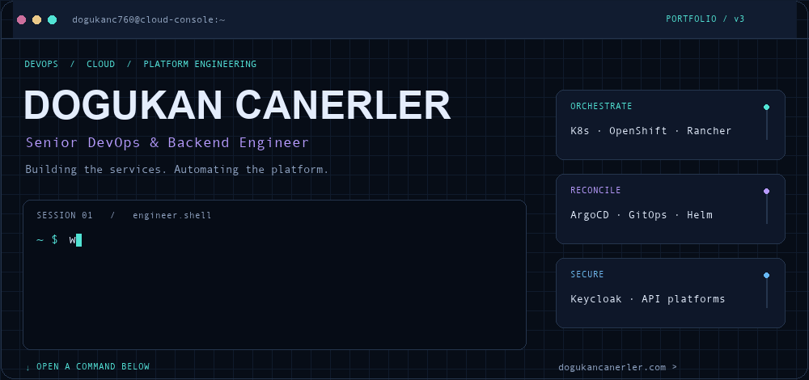
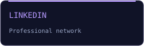
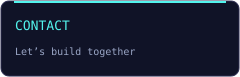
I build the services and the platforms behind them.
Senior DevOps & Backend Engineer based in Izmir, Türkiye, with experience across banking, fintech, e-commerce, and enterprise software. My focus: cloud platforms, Kubernetes operations, GitOps delivery, infrastructure automation, identity, and observable backend systems.
~ $ help
Click a command to expand its output. For the keyboard-driven terminal, launch my portfolio ↗.
☸ kubectl get platform --all-namespaces — Kubernetes · OpenShift · Rancher · cloud
Platforms: Kubernetes · OpenShift · Rancher · Docker · Helm · Linux
Cloud & IaC: AWS · Azure · Google Cloud · Terraform · Ansible · Bash
⟳ argocd app get delivery — GitOps · Keycloak · observability
Delivery: ArgoCD · GitOps · Azure DevOps · Git · CI/CD
Identity & edge: Keycloak · NGINX
Signals & tooling: Prometheus · Grafana · Kibana · Elasticsearch · Postman · REST · GraphQL
λ cat services.yaml — backend · languages · databases
Services: NestJS · Node.js · Express · .NET · Go
Languages: C# · TypeScript · JavaScript · Go · Bash
Data: PostgreSQL · MongoDB · Redis · SQL Server · MySQL · MariaDB · SQLite
▣ ls applications/ — frontend · mobile · integrations
Web & mobile: React · React Native · Flutter · Dart · Bootstrap
Additional platform experience: Heroku
Architecture & integration: Microservices · Event-driven services · REST APIs · GraphQL · B2B/B2C · Marketplaces · Stock-exchange APIs · Payment gateways
↳ cat reliability.md — how I approach production
$ engineering principles
[01] Version infrastructure and environment configuration.
[02] Automate repeatable operational work.
[03] Design delivery for safe rollout and recovery.
[04] Make failures visible through useful telemetry.
[05] Connect infrastructure decisions to application behavior.
My experience includes zero-downtime deployment approaches, multi-stage CI/CD, environment segregation, high availability, fault tolerance, cluster lifecycle management, and network monitoring.
~ $ topology --animate
A map of my engineering toolkit; the animation illustrates flow, not live infrastructure status.
~ $ tail experience.log
Open experience log — Panates · Akbank via Maarifa · earlier roles
- Panates Teknoloji: Kubernetes, GitOps/ArgoCD, backend microservices, infrastructure automation, and observability.
- Akbank, via Maarifa: Financial APIs, Azure DevOps delivery pipelines, and containerized applications.
- Earlier roles: Banking/fintech integrations, e-commerce and marketplace systems, enterprise software, and web/mobile development.
Full history and dates → · CV →
~ $ ls featured/
~ $ gh activity --watch
▶ play contributions.snake — an animation generated from my GitHub contribution calendar
GitHub visuals refresh through GitHub Actions. Calendar animation powered by Platane/snk.
dogukanc760@cloud-console:~ $ let's build something reliable ↗